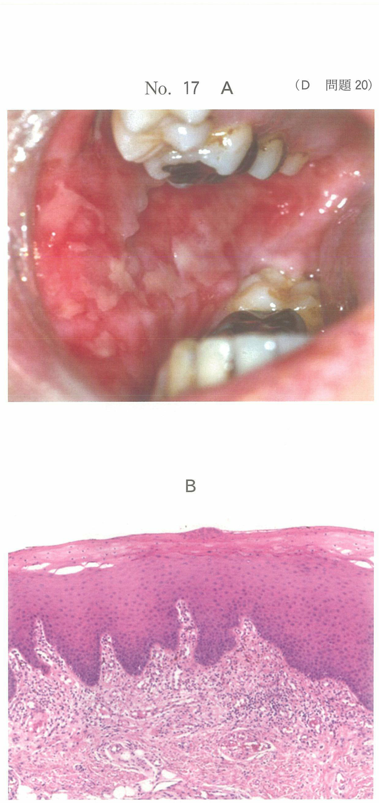
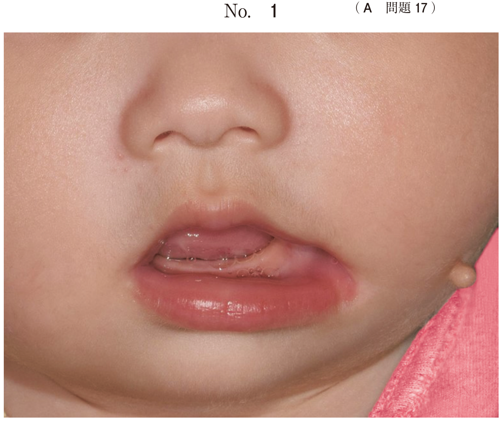
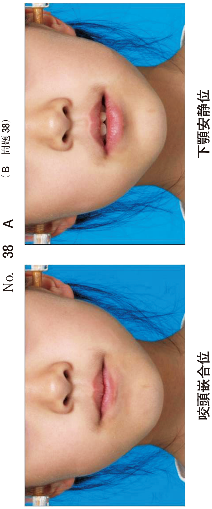
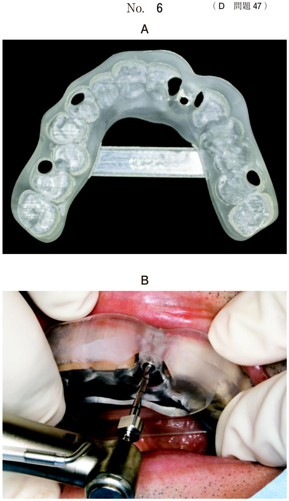

根管充填
根管充填の目的と意義
根管充填（root canal obturation）は、根管の拡大・形成と消毒によって無菌的になった根管を、生体に無害な物質で緊密に封鎖することを目的とする。細菌や有害物質の侵入・貯留を防止し、根尖歯周組織の健康維持・病変の回復を図る。
根管充填の時期の判定
- 感染源が根管から除去されている
- 痛みや不快症状がない
- 根管から排膿・出血がない
- 滲出液がない（あっても少量）
- 瘻孔のあった歯では閉鎖している
- 根尖相当部歯肉に発赤・腫脹・圧痛がない
根管充填材
ガッタパーチャポイント
最も広く使用される半固形充填材。圧接により変形する可塑性を有する。
| 組成 | 割合 |
|---|---|
| ガッタパーチャ | 19〜22% |
| 酸化亜鉛 | 59〜79%（最多） |
| 重金属塩（造影剤） | 1〜17% |
| ワックス、レジン | 1〜4% |
根管充填材の所要性質
- 組織親和性がある
- 化学的・物理的に安定
- 非吸収性である
- 根管壁に接着する
- X線不透過性がある
- 骨性瘢痕治癒促進作用がある
根管充填法の種類
| 充填法 | 特徴 |
|---|---|
| 単一ポイント法 | シンプルだが緊密封鎖は困難。近年は推奨されない |
| 側方加圧充填法 | スプレッダーで圧接→アクセサリーポイント挿入を繰り返す。広く行われる |
| 垂直加圧充填法 | 軟化したGPを垂直方向にプラガーで加圧 |
- スプレッダーでマスターポイントを圧接
- 生じた空隙にアクセサリーポイントを挿入
- 目的：根管充填の緊密度向上、側方圧負荷
即時根管充填法
局所麻酔下で抜髄後、ただちに根管充填を行う方法。適応症は限定される。
適応症
- 外傷や窩洞形成時に露髄した新鮮健康歯髄
- 補綴的理由による健康歯髄の便宜抜髄
- 歯冠部に限局した一部性の歯髄炎
- 根管処置が容易な解剖学的形態歯
| 長所 | 短所 |
|---|---|
| 治療回数の短縮 | 出血への対処困難 |
| 根管の汚染・感染防止 | 残髄時の処置困難 |
| 根管消毒薬の刺激なし | 炎症による不快症状 |
| 麻酔下で充填時の疼痛なし | 過剰充填が起こりやすい |
根管充填後の治癒
抜髄歯・感染根管治療歯ともに、根管充填後の根尖歯周組織は骨性瘢痕治癒により治癒する。線維性結合組織による瘢痕が形成される。
過去問
即時根管充填法
麻酔抜髄において即時根管充塡法によって低減できるリスクはどれか。2つ選べ。
b 根管の汚染
c レッジ形成
d 根管充填材の溢出
e 根管充填時の疼痛
【解説】即時根管充填法の長所から考える。仮封期間がないため根管の汚染を防止できる。また麻酔下で充填するため充填時の疼痛がない。残髄やレッジ形成、充填材の溢出は即時充填法の長所とは関係ない。
側方加圧充填法
38歳の男性。下顎左側第二大臼歯の治療中の写真（別冊No.21A）と用いた器具の写真（別冊No.21B）とを別に示す。
この操作の目的はどれか。2つ選べ。


b 過剰根管充塡の防止
c 余剰根管充塡材の除去
d 根管充塡の緊密度向上
e 根管充填材への側方圧負荷
【解説】写真Bはスプレッダーである。側方加圧充填法において、スプレッダーでマスターポイントを圧接する目的は、根管充填の緊密度向上と側方圧負荷によりアクセサリーポイントを挿入する空隙を作ることである。
根管模型に表面を黒色に塗ったガッタパーチャポイントを用いて側方加圧根管充填を行った。充填後の写真（別冊No.5A）と矢印の位置で切断した断面の拡大写真（別冊No.5B）を別に示す。アクセサリーポイントはどれか。1つ選べ。

b イ
c ウ
d エ
e オ
【解説】側方加圧充填では、マスターポイントが中心に位置し、その周囲にアクセサリーポイントが配置される。黒色に塗った表面が外側に見えているもの（イ）がアクセサリーポイントである。
骨性瘢痕治癒
骨性瘢痕治癒が生じるのはどれか。2つ選べ。
b 直接覆髄
c 生活断髄
d 直接抜髄
e 感染根管治療
【解説】骨性瘢痕治癒は根管充填後の治癒形態である。直接抜髄と感染根管治療は根管充填を行うため、骨性瘢痕治癒が生じる。覆髄や断髄は歯髄を保存する処置であり、根管充填は行わない。
X線読影
58歳の男性。上顎右側第一小臼歯の痛みを主訴として来院した。根管充塡前にマスターポイント試適を行うこととし、ポイントを作業長に合わせ折り曲げた。初診時のエックス線写真（別冊No.46A）、ポイントを先端から挿入したエックス線写真（別冊No.46B）およびポイントを折り曲げた位置から挿入したエックス線写真（別冊No.46C）を別に示す。
考えられるのはどれか。1つ選べ。

b 根管の癒合
c イスムスの存在
d 作業長設定の誤り
e 根尖部の拡大不足
【解説】先端から挿入すると頬側根管方向へ、折り曲げた位置から挿入すると口蓋側根管方向へポイントが進んでいる。これは根管の癒合（根管が途中で合流）を示唆する所見である。
37歳の男性。上顎左側第一大臼歯の咬合時の疼痛を主訴として来院した。補綴装置の適合に問題はない。垂直打診に反応を示した。プロービング深さは全周3mm以下であった。初診時のエックス線画像（別冊No.10）を別に示す。
疑われるのはどれか。1つ選べ。

b 歯根破折
c 歯根の外部吸収
d 未処置根管の残存
e 歯冠漏洩〈コロナルリーケージ〉
【解説】根管治療済みの歯で咬合時疼痛・垂直打診痛がある。X線で根管充填が不十分な根管（未処置根管）が残存していると考えられる。上顎大臼歯ではMB2（近心頬側第二根管）の見落としに注意。